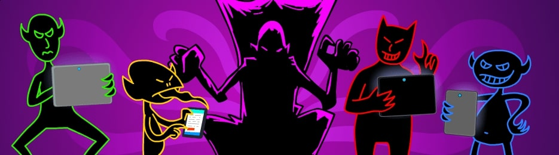

Zagrożenia w Sieci
Internet niesie ze sobą wiele zagrożeń. W dzisiejszych czasach, kiedy większość naszego życia przenosi się do świata online, stajemy przed nowymi wyzwaniami związanymi z bezpieczeństwem. Ataki phishingowe, złośliwe oprogramowanie, hakerskie działania - to tylko kilka przykładów tego, co może zagrażać naszym danym i prywatności. Zrozumienie tych zagrożeń jest kluczowe dla ochrony naszej cyfrowej egzystencji.
- Ataki phishingowe
- Malware i wirusy
- Ataki hakerskie

Co robić?
Aby chronić się przed zagrożeniami w sieci, należy podjąć odpowiednie środki bezpieczeństwa. Oto kilka zaleceń:
- Regularnie aktualizuj oprogramowanie
- Korzystaj z silnych haseł
- Instaluj antywirusy i oprogramowanie anty-malware
Rodzaje Zagrożeń w Sieci
Istnieje wiele rodzajów zagrożeń w sieci. Oto kilka z nich wraz z krótkimi opisami:
- Phishing: Atak polegający na wyłudzeniu poufnych informacji, często poprzez podszywanie się pod zaufane źródło.
- Ransomware: Oprogramowanie szantażujące, które blokuje dostęp do danych lub systemu i żąda okupu za ich odblokowanie.
- Ataki DDoS: Ataki, które mają na celu przeciążenie infrastruktury sieciowej, uniemożliwiając dostęp do usług online.
- Wirusy i trojany: Złośliwe oprogramowanie, które może infekować systemy i kraść dane.
- Keylogging: Technika, która polega na rejestrowaniu klawiszy naciśniętych na klawiaturze, w tym haseł.
Aby skutecznie zabezpieczyć się przed różnymi zagrożeniami w sieci, warto stosować środki bezpieczeństwa. Poniżej znajdziesz szczegółowe instrukcje, które pomogą w chronieniu swoich danych i prywatności online:
- Regularnie aktualizuj oprogramowanie: Zapewnij, że wszystkie aplikacje, system operacyjny i przeglądarka internetowa są regularnie aktualizowane. Aktualizacje często zawierają łatki bezpieczeństwa, które chronią przed nowymi zagrożeniami.
- Korzystaj z silnych haseł: Twórz unikalne, trudne do odgadnięcia hasła, używając kombinacji małych i dużych liter, cyfr oraz znaków specjalnych. Unikaj używania tych samych haseł do różnych kont.
- Instaluj antywirusy i oprogramowanie anty-malware: Używaj renomowanego oprogramowania antywirusowego, które skanuje i chroni Twój system przed złośliwym oprogramowaniem, wirusami i innymi zagrożeniami.
- Uważaj na ataki phishingowe: Nie otwieraj podejrzanych linków ani nie udostępniaj swoich danych osobowych w odpowiedzi na podejrzane e-maile. Zweryfikuj autentyczność strony przed podawaniem informacji.
- Przeglądaj bezpiecznie: Unikaj odwiedzania podejrzanych stron internetowych i pobierania plików z niezaufanych źródeł. Korzystaj z bezpiecznych połączeń HTTPS, szczególnie podczas dokonywania transakcji online.
- Zabezpiecz swoje urządzenia mobilne: Stosuj podobne środki bezpieczeństwa na urządzeniach mobilnych, takich jak smartfony i tablety. Ustaw blokadę hasłem na urządzeniach mobilnych i aplikacjach zawierających wrażliwe dane.
Instrukcje obsługi: W celu zabezpieczenia swojego konta online, zalecamy regularne zmienianie hasła co najmniej co 3-6 miesięcy. Upewnij się, że hasło zawiera co najmniej 12 znaków i obejmuje różne rodzaje znaków. Dodatkowo, używaj różnych haseł do różnych kont online, aby zminimalizować ryzyko w przypadku ewentualnego wycieku jednego z haseł.
Ciekawe Historie Największych Cyberataków
Ponieważ świat cyfrowy staje się coraz bardziej skomplikowany, historie największych cyberataków pozostają fascynującym studium zarówno dla ekspertów, jak i zwykłych użytkowników. Oto cztery ciekawe przypadki:
- Equifax (2017): W wyniku ataku na agencję kredytową Equifax, doszło do wycieku danych ponad 147 milionów osób. Cyberprzestępcy zdobyli dostęp do informacji takich jak numery ubezpieczeń społecznych i daty urodzenia, co spowodowało poważne konsekwencje dla ofiar, w tym potencjalnego kradzieżu tożsamości.
- Stuxnet (2010): Stuxnet to złośliwe oprogramowanie stworzone, aby zaatakować irańskie centrum jądrowe. Oprogramowanie to było niezwykle zaawansowane i zainfekowało tysiące komputerów, niszcząc urządzenia przemysłowe i pokazując, jak cyberatak może mieć wpływ na rzeczywiste systemy.
- Yahoo (2013-2014): W jednym z największych przypadków utraty danych w historii, Yahoo doświadczyło dwóch ogromnych ataków, w wyniku których wyciekło ponad miliard danych użytkowników. Ataki obejmowały informacje o e-mailach, hasłach i innych danych osobowych, prowadząc do poważnych problemów bezpieczeństwa.
- NotPetya (2017): Atak ransomware NotPetya, który zainfekował tysiące komputerów na całym świecie, był początkowo ukierunkowany na Ukrainę. Jednak ze względu na jego złożoność, szybko rozprzestrzenił się globalnie. Atak spowodował znaczne szkody finansowe dla wielu firm i organizacji.
Te historie ilustrują, jak skomplikowane i destrukcyjne mogą być cyberataki oraz jak ważne jest zrozumienie zagrożeń i odpowiednie zabezpieczenie się przed nimi.
Statystyki Bezpieczeństwa w Internecie w Polsce
Statystyki Bezpieczeństwa w Internecie w Polsce
Aktualne Statystyki
W 2021 roku CSIRT NASK zarejestrował łącznie 29 483 incydenty bezpieczeństwa i był to aż o 182% wzrost w porównaniu do liczby incydentów w roku 2020. Z raportu wynika również, że podobnie jak w 2020 r. zdecydowanie najczęstszym rodzajem cyberataków był phishing, który stanowił 73% wszystkich zgłoszonych incydentów.
(Dane które udało mi się znaleść)
Wykres Słupkowy - Raport Cyberataków 2021
Osadzony Film z YouTube
Jak szybko zostaniesz zhakowany?